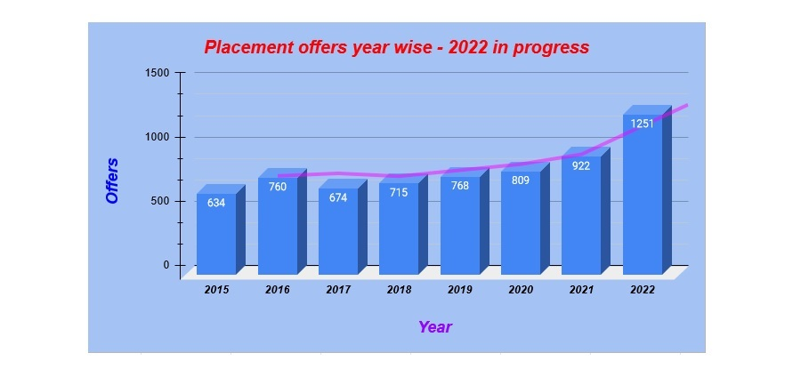
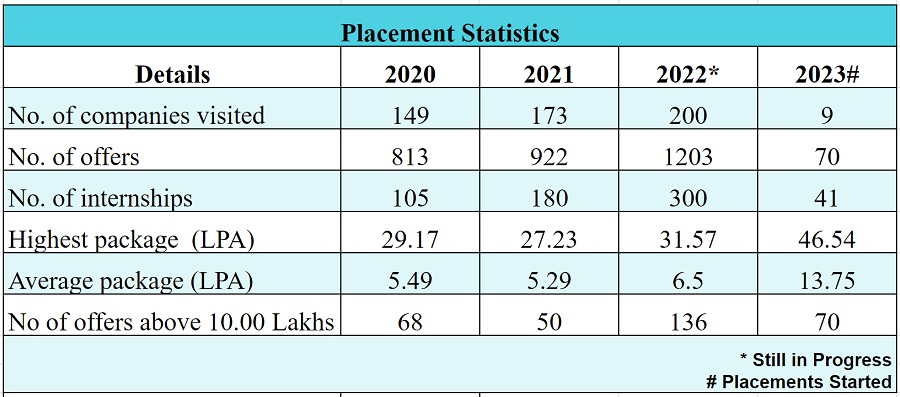

SIT is the first institution among the affiliated colleges of the Visvesvaraya Technological University to
establish a full-fledged Training and Placement Department with a senior professor, experienced in industry, as its
head. The department is responsible for contacting industries, invite them for campus recruitment.
The department also provides Guest house accommodation, local hospitality and other infrastructural facilities
to the industries to effectively and efficiently conduct campus selection programmes.
During the last three years, the department has been successful in getting a number of industries
to visit SIT for campus recruitment. These include TCS, Wipro, Bharat Electroncis Limited (PSU), Mercedes - Benz R & D,
Sony India, Nokia, JP Morgran, VMWare, Siemens, Aricent, Oracle, Cataraman Ventures, DELL, E & Y, Allstate, IBM, L & T,
Mindtree, National Payment Cooperation Philips Software, Robert Bosch, TVS Group, Kalyani Group, Triveni Engineering etc.
A large number of students are getting placed in the industry through campus recruitment.
Mission
To train students in personality development, industrial orietation and thus, help them get placed in
reputed industries.
Short Range Goals
Contacting the industries and inviting them for campus interviews
Effectively carrying out institute-industry-interaction in terms of mutual contacts, exchange of
information & ideas, arranging visits and technical talks from industrial experts, etc.
Arranging vocational training to students in suitable industries depending on their aptitudes and skills.
Assisting the departments in arranging project works for students in reputed industries so that the
students get hands-on experience in solving industrial problems.
Long Range Goals
To emerge as a leader in placement where multinationals vie with each other to recruit students of SIT
To build a leading HR centre to hone the skills of students in industriousness, integrity, communication,
analytical ability
To proactively interact with industries and seek their co-operation in vocational training and project
work for students, as well as, be active players in the overall improvement of academic ambience
Training:
The department organizes the following professional development and placement related training programmes
every year for all the students in ODD and EVEN semesters.
I / II Semester
Communicative English Programme:
From the academic year 2011-12, Communicative English has been introduced in the curriculum as a mandatory subject.
However, from the academic year 2018-19 it is a credit subject with 2 credits. The syllabus of communicative English
for I / II semester students is thoroughly revised and tuned to the present-day business requirements.
The course content consists of 2 parts namely, Class room lectures of 24 hours and Lab component of 24 hours
of self-study with online course developed by Cambridge ESOL of Cambridge University which is made available to
all students.The Standardized Test of English Proficiency (STEP) - The Hindu GroupThe STEP is an English language
testing, training and certification program, launched by The Hindu Group. STEP’s tests and training programs help
students access and improve their reading, writing, listening and speaking skills. STEP has been benchmarked
against global standards. The Scoring system has been mapped to the CEFR (Common European Frame of Reference) Scale.
II SEMESTER
Feel Employable Programme:
A three-day orientation programme focusing on oral and written communication, public speaking, group discussion,
building self-esteem, mind skill development, biodata preparation, comprehension using effective criticism,
application writing and team building.
V SEMESTER
Training Programme on Soft-skills:
From the academic year 2013-14, Soft Skills has been introduced as a mandatory subject. It is a 36 hours programme
focusing on training students in soft-skills such as interpersonal skills, leadership skills, time management,
business etiquette, psychological team building skills, group discussion and personal interview skills.
12 hours are allotted exclusively on Group Discussion and Interview Skills.
Training Programme on Advance Technical Training:
From the academic year 2018-19, Advance Technical Training has been introduced for all VI semester students
of Non-IT branches as CREDIT SUBJECT. The same is being offered in V semester from the academic year 2019-20.
The expert trainer groups are conducting these classes as per the prescribed syllabus. It is a 36
hours programme focusing on training students in “C, Data Structures and Python".
Coding Skills Empowerment Training in association with Coding Ninjas:
From the academic year 2021-22, Coding Skills Empowerment Training program has been introduced for V semester
students of Computer Science related branches to enhance the Coding Skills to have the better oppurtunities in
product related and higher package companies.
VI SEMESTER
Training Programme on Aptitude Related Analytical Skills:
Aptitude Related Analytical Skills has been a mandatory course from the academic year 2010-11 and it has been
made a CREDIT SUBJECT from 2018-19 academic year. The expert trainer groups are conducting these classes as per
the prescribed syllabus. It is a 36 hours programme focusing on training students in solving logical, quantitative
reasoning, general and technical aptitude tests based on companies’ requirement. Internal assessment tests and
examinations are also conducted.
Placement Statistics:
No. of offers made from last 8 years

Placement Statistics for 3 years

Placement Team:
Anbalagan Heroji
Professor & Head
B.Pharma., M.Tech., MBA, Ph.D.
anbuh@sit.ac.in
0816 2284290, +91 9052061222
G V Suresh
Senior Project Manager
B.E.
suresh_gv@sit.ac.in
+91 98454 15189
B R Rajesh
Instructor
B.E.
brrajesh@sit.ac.in
+91 9481860339